Press fit
second assignment of the semester.
Measuring the kerf was worked in a group. My groupmembers were Stefán Már Helgason, his website and Magnús Snær Ríkarðsson, his website.
We went to fablab Reykjavík and in fusion 360 we drew a 100*10mm rectangle with cut-lines with 10mm intervals inside the rectangle. We sent that file to the laser cutter and ended up with the following.
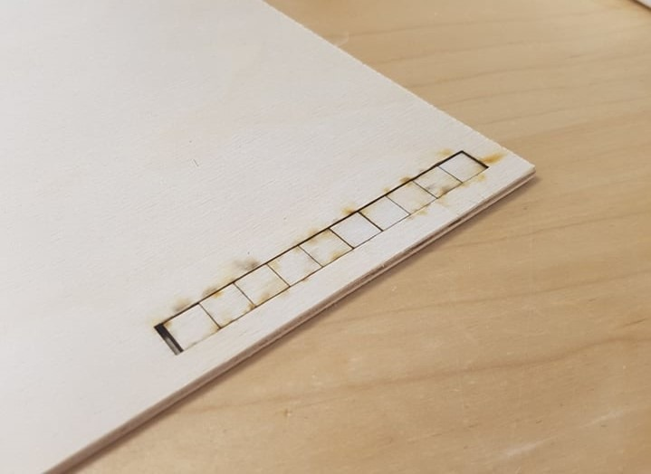
After that we took one square out of the rectangular space and measured the empty space, that space was measuerd to be 12,08mm. Next we measured the square that we removed, that square was measured to be 9,8mm. In total there were 11 lasercuts done on the rectangle so to measure the kerf we used the formula (12,08-9,8)/11 = 0,207 which is our kerf. I then went to my parameters and set the parameter "kerf" to 0,207.

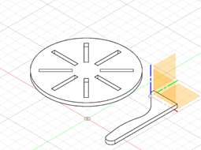The assignment was to design a parametric, scalable and press-fit model of a building block. It took some time to decide what to design and in the end after some time I decided to create a phone stand and one of the reasons I decided on this was because it didn’t need a lot of material so if I failed it would be ok. The material I used was plywood and its dimensions are 4 x 300 x 600 mm. I used Fusion 360 to design my building blocks, I tried first to do it myself without any help from the internet, but it wasn’t working. I had some design in mind and when I tried executing it I realised that something was wrong.
After reorganizing my plan, the next step was doing some research and watch some Youtube videos. Fusion360: Automatically sized finger-jointsshowed me how smart it was to use the parameters to decide the size of my building blocks. After creating the box that the video showed it was time to start drawing. Designing a Lasercut Laptop Stand with Fusion 360 helped me vizualise my design and also showed me some nice functions that would be helpful in the design.
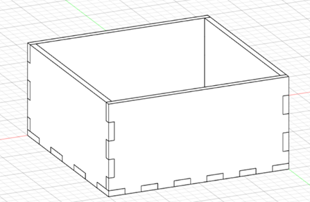
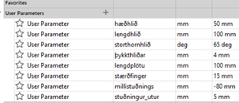
Disclaimer: For each individual part I created a new component.
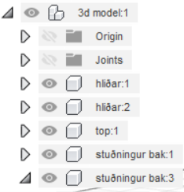
The first step was creating the sides because they would be a good foundation for the building blocks. I started a new sketch on a plane and roughly made the shape, then I used the dimensions function to decide length and height and put the appropriate parameters (see picture). After the sketch was finished, I extruded the sketch 4mm and then I copied the new body and offset it 100mm so I wouldn’t need to make the same sketch twice. Now I have 2 bodies for the side and if I make one change to one of the sides it will also affect the other side which was very convenient when I used the fillet function to round the edges.
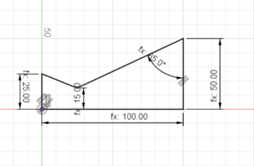
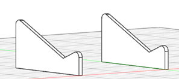
Next up was to create the top and I started the sketch on the inclined face of one of the side pieces. I drew a rectangle that I then fixed with the dimension function. Two construction lines were created so I could mirror 4 holes so that the top would press-fit into the sides. Now the sketch for the top is complete so now I need to extrude the sketch and then combine it so it will cut into the sides and make the necessary shape so that the building blocks would be press-fit.
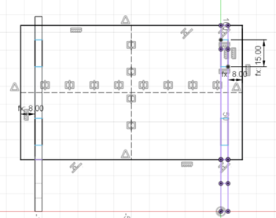
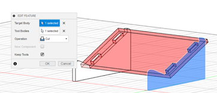
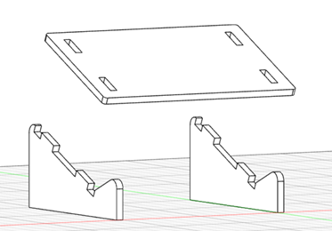
Now that I have the sides and the top, all I need is the support panels on the bottom. I started at the back of the sides, offset a plane to start my sketch and did the same concept as the top, create a rectangle, put the dimensions on it, extrude it (so it cuts). Now I have one support block and the next step is to create a midplane of the side blocks and then mirror the support block using the midplane.
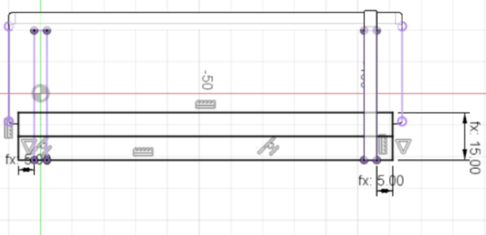
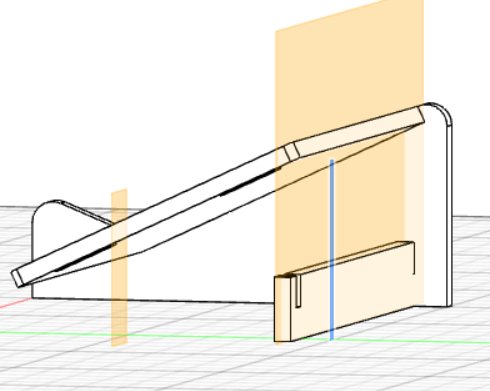
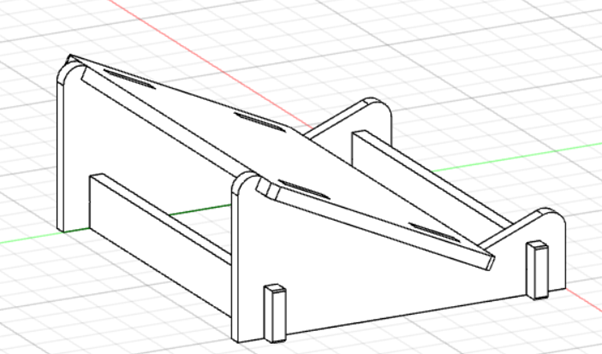
Now we have every component we need to prepare it in Inkscape and to prepare the components. I installed DXF for laser and that made it easy to adjust the faces to the appropriate kerf and automatically created a dxf file of the component that I then dragged the dxf file into Inkscape. DXF Segmented Line Fix in Inkscape 2 showed me the necessary step to prepare for the cut. Format High-Quality Images in GIMP for Laser Cutting (Georgia Tech Invention Studio)
showed me step by step how to prepare images to be laser cutted onto my pieces and was really helpful so that went really well. The laser cut took place in Fablab and the appropriate manuals were there to make everything ready and finish the cut.
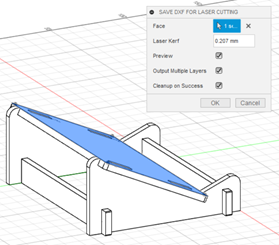
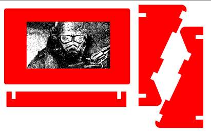
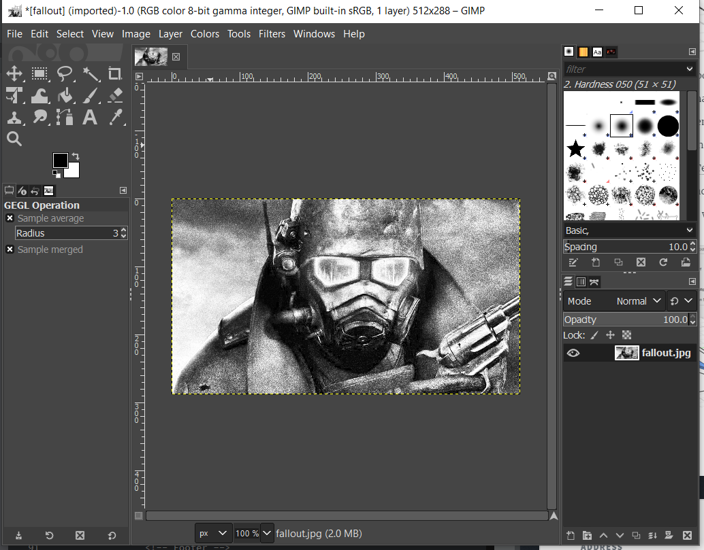
Design files
As you can see there is a missing piece, for the support, on the inkscape picture, I took notice of this when I already cut my pieces but it was easy to fix. I copied the piece that I needed moved it to a location that had free space and cut again.
I am happy with the result of this assignment and in the picture below you can see the product being used.
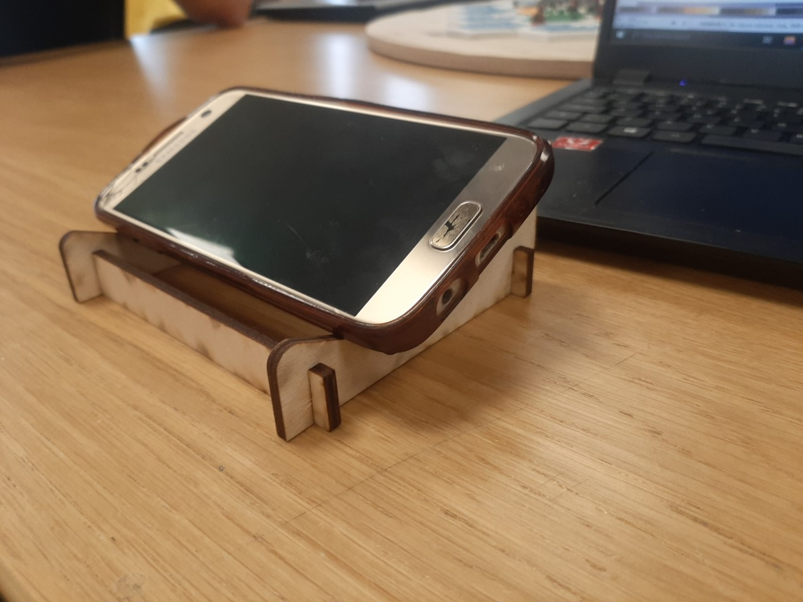
In the link below you can access the design files of this project.
Design files
Timetable
| name | Description | hour |
|---|---|---|
| Kerf | Meassuring Kerf to use for laser cutting | 1 hour |
| Research | Research about diffrenet things to create and also learning about functions in Fusion 360 | 10 hours |
| Fusion 360 | Drawing, extruding, refineing and redrawing in Fusion 360 | 7 hours |
| GIMP | Grayfilming a picture to leser cut onto my phonestand | 0.5 hours |
| Inkscape | Connecting all lines to make ready for laser cut | 1 hour |
| Fablab | Laser cutting and assembly at Fablab | 1.5 hours |
| Documentation | Setting up the documentation for this assignment in brackets | 2.5 hours |
| Total hours | 23.5 hours |